The Project Match is thought for the planning of projects of big scale.
Allows to manage more slabs at the same time in order to program all the workings necessary for the project with an overview.
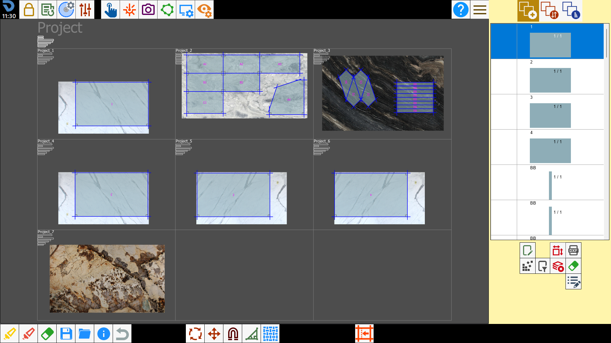
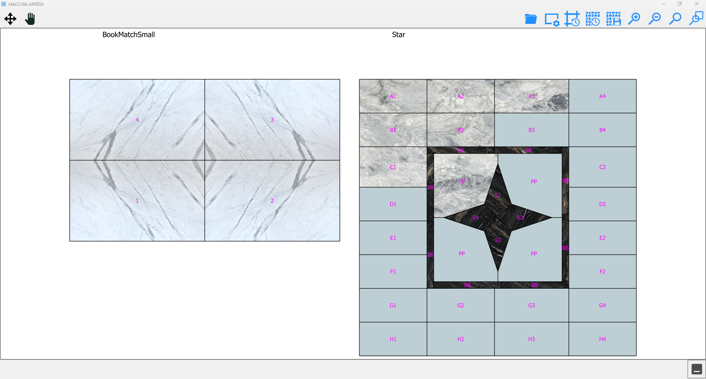
Control Panel
Pressing the button on the bottom bar opens a panel through which to navigate inside the functionality.
If you want to access the Project Match, these buttons will be shown.
/image-20250623-112213.png)
/2.1-20250623-112413.png) | New project |
Load project | |
/2.3-20250623-112528.png) | View preview |
Inside a project, the panel has different buttons.
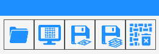
/2.6-20250623-113918.png) | Save work area |
Save all work areas | |
/2.8-20250623-114101.png) | Save and close project |
New project
Pressing the button opens a window that allows to create a project for the open book multi slab.
/2.4.png)
Name | Name with which to save the project. |
Rows | Allows to decide the number of rows of the project. |
Columns | Allows to decide the number of columns of the project. |
Slabs | Number of slabs total that the project can contain. |
/0.04.png) | Size work area |
Load a project
In this screen are shown the saved projects that is possible to open.
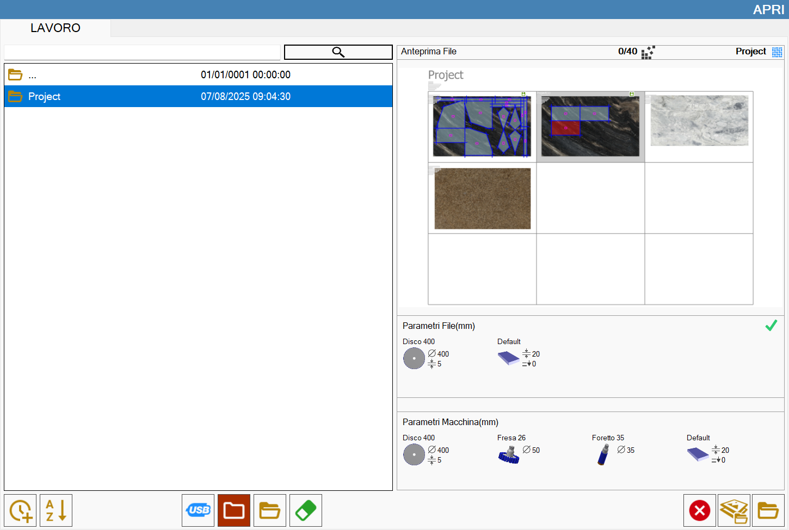
Close a project
A window opens that allows to close the project.
/0.06.png)
/0.07.png)
To change the closing mode use the button:
/0.10.png) | Closing mode |
Project
A project is structured in rows and columns, where the slabs can be contained.
In this screen is possible insert slabs inside the project, define their perimeters and place the pieces.
The operator can move the pieces between one slab and the other as desired.
Work zones
The work zones are represented by the cells of the project.
Each zone allows to manage the processing of a slab, defining a perimeter and inserting pieces inside it.
/0.11.png)
In the top left corner of each work zone some information are shown.
Slab | Dimensions of the slab (width x height x thickness). |
Pieces | Number of pieces positioned inside the perimeter. |
Slabs Area | Area of the slab perimeter. |
Piece Area | Area of pieces positioned inside the perimeter. |
Percentage | Percentage of perimeter area occupied by pieces. |
Cuts | Total length of the cuts to be executed on the slab. |
Minutes | Estimation of time, in minutes, that is spent to execute the cutting program on the sheet. |
Project parameters
Inside the user parameters panel the section 'Slabs' is shown through which it is possible to modify some properties of the currently opened project.
/0.00.png)
Rows | The operator can change the number of lines of the current project. |
Columns | The operator can change the number of columns of the current project. |
Total | Total number of zones that compose the current project. |
Slabs | Number of slabs inserted in the current project. |
Pieces | Number of pieces inserted inside current project. |
/0.01.png) | Keyboard shortcuts |
Keyboard shortcuts
For Project Match there are keyboard commands that allow you to easily perform routine actions, useful to simplify the work in office.
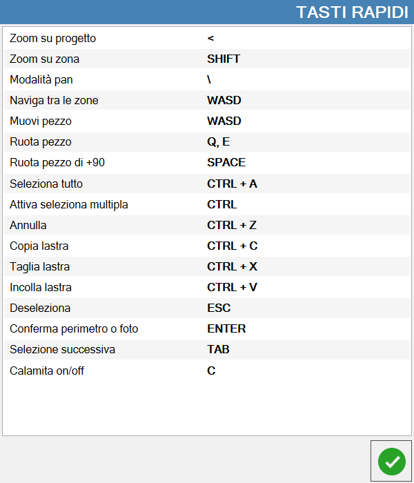
Zoom on project | Widen the view on the entire project. |
Zoom on zone | Narrows the view on selected work zone. |
Mode pan | Allows to move the viewing through the interaction with the screen. |
Navigate zones | Allows to change the selected zone using the keys. |
Move piece | Move the selected piece in the four directions. |
Rotate piece | Rotate the selected piece respectively in counterclockwise and clockwise. |
Rotate piece _90 | Rotate the piece 90 degrees clockwise. |
Select all | If a work zone is selected, this command selects all the pieces inside it. |
Active multiple selection | Activate the multiple selection of pieces/work zones. |
Cancel | Cancel the last operation executed. |
Copy slab | Copy the slab inside the selected work zone. |
Cut slab | Cut the slab inside the selected work zone. |
Paste slab | Paste the slab within the selected work zone. |
Unselect | Allows to deselect all pieces/work zones. |
Confirm perimeter\photo | To be used to confirm perimeter/photo |
Select next | Select the next piece within selected work zone. |
Magnet on/off | Activate/deactivate the pieces magnet. |
Quick controls
With the right mouse button, you can access the quick commands window.
The proposed functionalities change if you press inside a work zone or outside of all.
Project commands
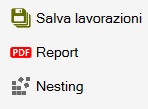
/0.31.png) | Save workings |
/0.23.png) | Report |
Nesting |
Work zone commands
/0.21.png)
/0.26.png) | Lock/Unlock |
/0.27.png) | Cut it |
/0.28.png) | Save |
| Report |
Import file | |
Nesting |
Nesting
Activating the Nesting function on the entire project, two modes are available.
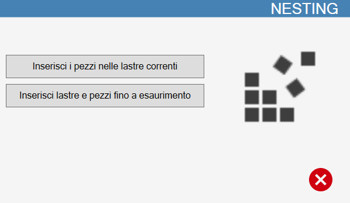
Insert the pieces into current slabs | Inserts the pieces on the slabs already present in the project, in order to optimize available space. |
Insert slabs and pieces until exhaustion | Are created slabs on which to apply the Nesting until all pieces of the list are exhausted. |
To use the Nesting until exhaustion of pieces it is necessary to create a perimeter to give indication to the program of the dimensions of the slabs that will be used.
Will be created slabs of the same size until all pieces of the list are inserted with the Nesting.
/0.32.png)
/0.34.png)
Report
Save a report in PDF format in the dedicated folder project/current work zone.
Preview
In this window is possible to see a complex representation of the project in real time.
It is possible to insert pieces inside the selected work zone pressing inside on the preview.
Furthermore, by dragging the background of a piece, the operator can change the position of the piece on the bench.
Buttons
To the left there are these buttons.
/2.02.png) | Move pieces |
Move view |
To the right there are these buttons.
/0.17.png) | Load render |
/0.16.png) | Customize preview |
/0.18.png) | Reset pieces' position |
/0.19.png) | Project configuration reset |
/0.20.png) | Save render |
Planning of a project
Create a new project
The operator creates a new project indicating its name, the number of rows and columns that compose it, remembering that each cell equals a slab, and the dimensions for the cells. Once confirmed this will be the screen:
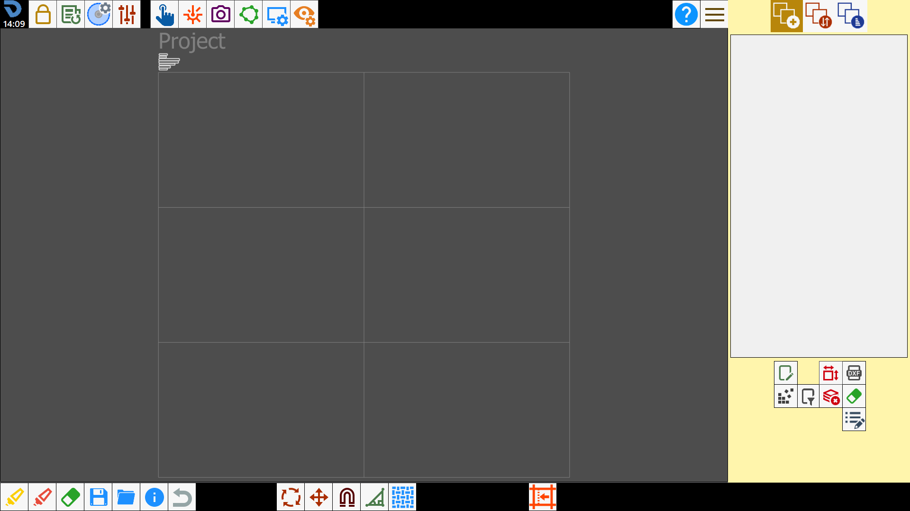
Add slabs
Afterwards insert the slabs into the work zones. To do this select a zone, load a photo from file, and choose the perimeter.
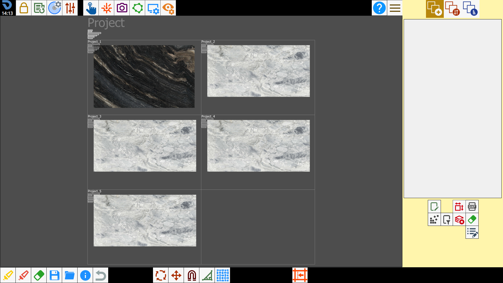
Import pieces
At this point, import the pieces that you want to cut. You can load both DXF files and standard pieces. There is no limit to the number of files that can be loaded.
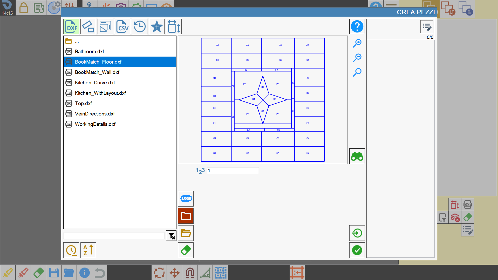
Open preview
When there are pieces inside the list, you can open the window with the preview of the project.
This will show all pieces that have been imported.
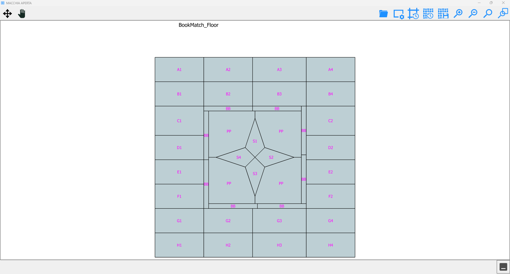
Insert pieces in slabs
To insert the pieces inside the slabs, use the classic method through the piece list, or select within the areas of the pieces that you see in the preview.
They will therefore be inserted on the slab of the selected work zone.
By dragging one of the pieces from the preview, the piece will also move on the slab so as to choose the best part of the slab to make the grain match between the various pieces. You can also do the reverse, that is, drag the piece from the slab and see from the preview whether the grain matches or not based on where it is moved.
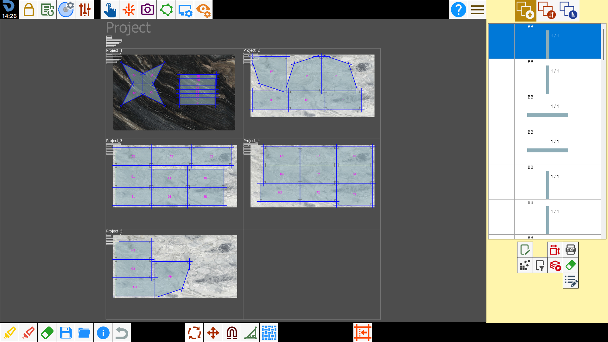
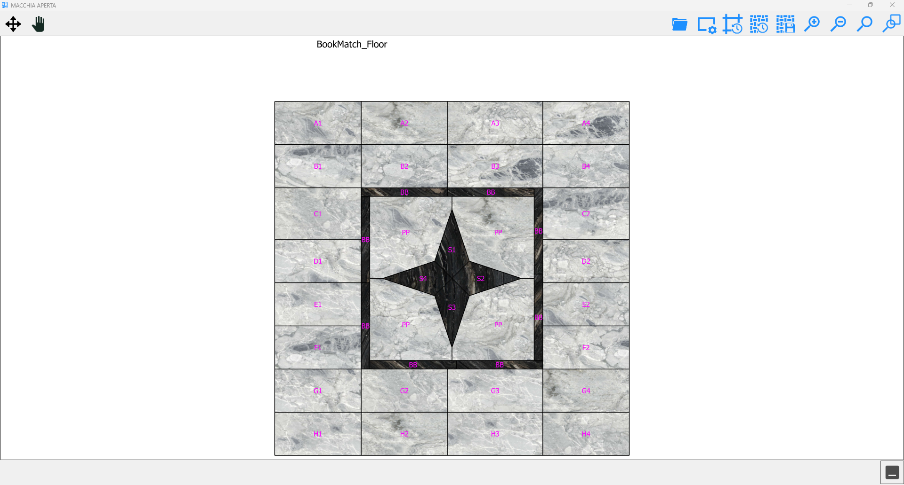